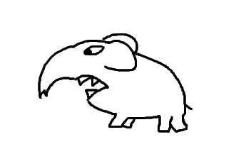
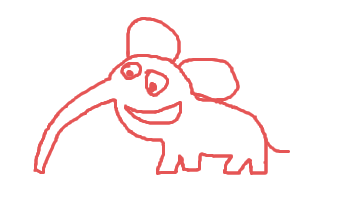

Сашка гуляла по улице и увидела на стене плакат. На плакате было написано:
Внимание! Из зоопарка сбежал слон Альберт. Будьте осторожны!
И нарисован слон. Примерно такой:

Ой, испугалась Сашка, опасно гулять по улицам когда на тебя может напасть злой слон. И поспешила домой.
Проходя мимо одного из маленьких двориков Сашка услышала странный шум и мяукание. Девочке показалось, что это сбежавший слон нападает на кошку. И хотя было очень страшно, она забежала во дворик чтобы помочь. А во дворе действительно стоял прятавшийся в ящиках слонб а перед ним большой рыжий кот с разорванным ухом. Вот только на самом деле слон был слонёнком и совсем не страшным. И он совсем не нападал на кота, наоборот — рыжий уличный хулиган увидев перед собой огромного зверя решил его прогнать или хотя-бы исцарапать.
А ну брысь! Сашка побежала к коту, хлопая в ладоши и топая ногами чтобы напугать его. Рыжий кот перестал шипеть на слонёнка и посмотрел на девочку. Решив что перевес теперь не в его пользу, кот по ящикам забрался на крышу и удрал.
Теперь уже Сашка ничего не боялась. Она подошла к испуганному слонёнку. Ты ведь Альберт? Это ты сбежал из зоопарка? Услышав своё имя, Альберт перестал дрожать и подошёл к девочке.
Ой! воскликнула Сашка, ты улыбаешься! И вправду — казалось что Альберт улыбался и может быть даже говорил «спасибо» на языке слонов. Ты совсем не страшный слон, сказала Сашка, ты маленький добрый слонёнок. Хотя на самом деле, никаким он не был маленьким по сравнению с Сашкой.
Девочка и слонёнок тут же подружились и пошли гулять вместе. Альберт оказался очень непослушным. То встанет прямо на трамвайных рельсах — трамвай звенит, пассажиры ругаются, водитель угрожает позвонить куда следует — а Альберт стоит себе как ни в чём ни бывало, и никто с ним ничего сделать не может. А потом сам возьмёт и уйдёт.
То попытается просунуть свою большую голову в маленькое окошко киоска. Или даже зайти в кондитерскую из которой пахнет свежими булками. А в городском парке Альберт раздавил все скамейки, когда пытался на них сесть. Сашка очень ругалась на слонёнка, но тот её совсем не слушал.
А скоро приехала большая машина из зоопарка и Альберта увезли домой.
Обязательно приходи ещё на следующей неделе! Сашка помахала ему вслед. А на обратной доорго она вновь увидела на стене плакат про сбежавшего опасного слона. Сашке этот плакат теперь очень не понравился, она взяла фломастер и исправила текст:
Внимание! Из зоопарка вышел погулять озорной слонёнок Альберт. Будьте добры и вежливы!
А ещё нарисовала на плакате вместо страшного слона, доброго слонёнка. Примерно такого:
